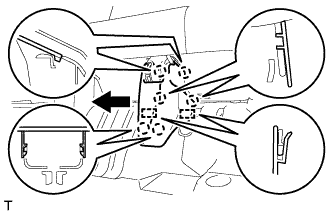

ЗАДНЕЕ СИДЕНЬЕ № 1 В СБОРЕ (для моделей с опускаемым сиденьем раздельного типа 60/40 с левой стороны) > СНЯТИЕ |
| 1. СНИМИТЕ ПОДГОЛОВНИК ЗАДНЕГО СИДЕНЬЯ В СБОРЕ |
Снимите подголовник.
| 2. СНИМИТЕ ЦЕНТРАЛЬНЫЙ ПОДГОЛОВНИК ЗАДНЕГО СИДЕНЬЯ В СБОРЕ |
Снимите подголовник.
| 3. СНИМИТЕ НАКЛАДКУ ПЕТЛИ ПОДУШКИ ЗАДНЕГО СИДЕНЬЯ № 2 |
С помощью съемника молдингов расцепите 6 захватов.
Освободите 2 направляющие и снимите крышку.
| 4. СНИМИТЕ НАКЛАДКУ ПЕТЛИ ПОДУШКИ ЗАДНЕГО СИДЕНЬЯ № 1 |
|  |
С помощью съемника молдингов расцепите 6 захватов.
Освободите 2 направляющие и снимите крышку.
| 5. СНИМИТЕ НАКЛАДКУ ПЕТЛИ ПОДУШКИ ЗАДНЕГО СИДЕНЬЯ № 4 |
С помощью ручки отпускания регулятора наклона переместите сиденье в положение, показанное на рисунке.
С помощью съемника молдингов расцепите захват и снимите накладку.
| 6. СНИМИТЕ НАКЛАДКУ ПЕТЛИ ПОДУШКИ ЗАДНЕГО СИДЕНЬЯ № 3 |
С помощью съемника молдингов расцепите захват и снимите накладку.
| 7. СНИМИТЕ ЛЕВОЕ ЗАДНЕЕ СИДЕНЬЕ № 1 В СБОРЕ |
Выверните 3 болта, отверните гайку и снимите сиденье.